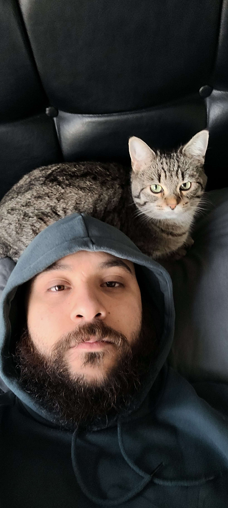

Professional cat lover from Sheffield
Currently have 2 cats!
- Birthday: 1 July 1996
- Website: www.kittyworld.com
- Phone: +447466917361
- City: Sheffield, UK
- Age: 26
- Degree: Software Engineering
- Email: laithoday5@yahoo.com
- Freelance: Available
Interesting cat facts:
- A house cat’s genome is 95.6 percent tiger, and they share many behaviors with
their jungle
ancestors, says Layla Morgan Wilde, a
cat behavior
expert and the founder of Cat Wisdom 101. These behaviors include scent marking by scratching, prey play,
prey
stalking, pouncing, chinning, and urine marking.
- Cats are believed to be the only mammals who don’t taste
sweetness.
- Cats are nearsighted,
but their
peripheral vision and night vision are much better than that of humans.
- Cats are supposed to have 18 toes (five toes on each front paw; four toes on each back paw).
- Cats
can jump up to six times their length.
- Cats’ claws all curve downward, which means that they can’t
climb down
trees head-first. Instead, they have to back down the trunk.
- Cats’
collarbones
don’t connect to their other bones, as these bones are buried in their shoulder muscles.
- Cats have 230 bones, while humans only have 206.
- Cats have an extra organ that
allows them
to taste scents on the air, which is why your cat stares at you with her mouth open from time to time.
- Cats have whiskers on
the backs of their front legs, as well.
- Cats have nearly twice the amount of neurons in their
cerebral cortex as dogs.
- Cats have the largest
eyes relative to their head size of any mammal.